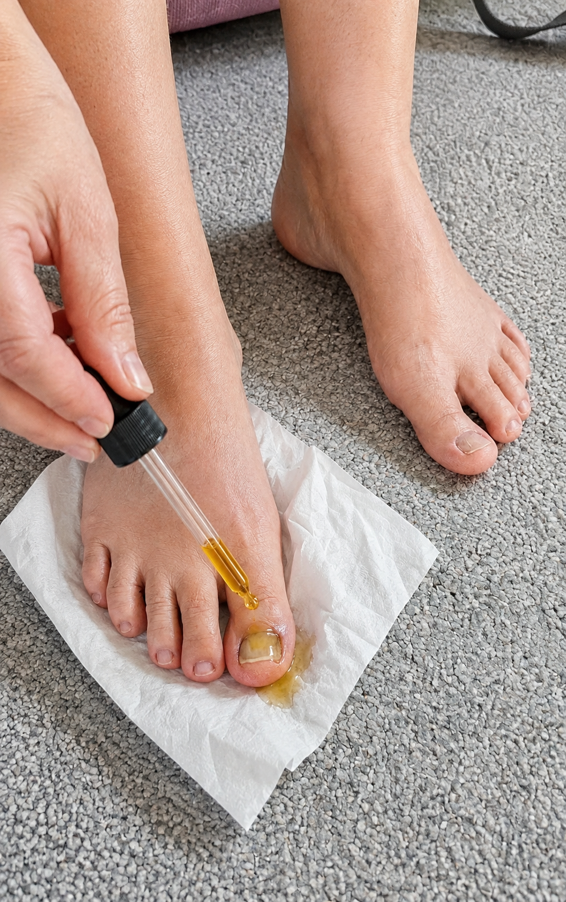
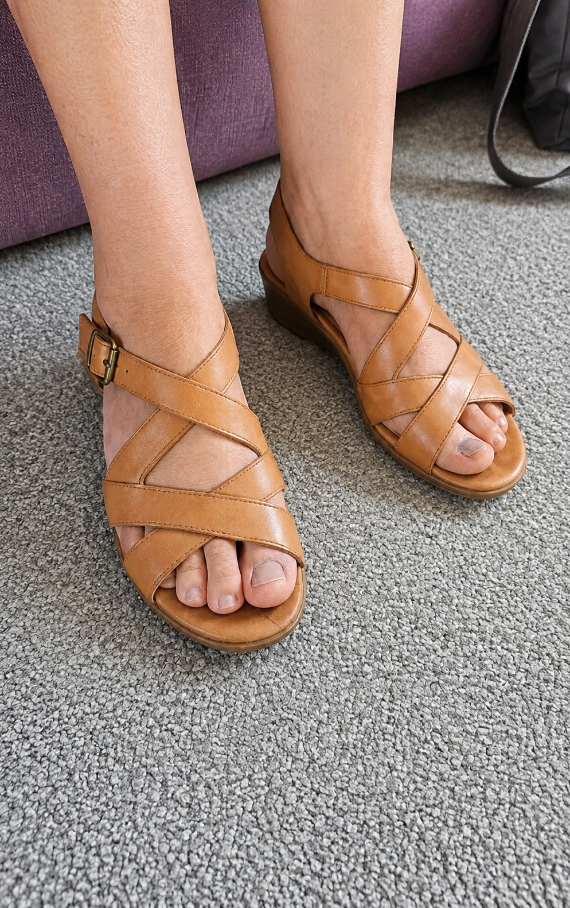

I never thought something as small as my toenails could affect my confidence this much.
For years, I tried not to think about my feet.
But every time summer came around, I found myself making the same little choices without even realizing it.
I would reach for closed shoes instead of sandals.
I avoided going barefoot around the house.
And whenever I was getting ready for the pool or a vacation, I would make sure my feet stayed covered.
It sounds like such a small thing.
But when you’re constantly thinking about whether someone might notice your nails, it can start to affect how comfortable you feel in everyday situations.
I’m 47, and I remember thinking, “When did I become so self-conscious about something I never used to worry about?”

I tried a few different creams and home remedies that people recommended online.
Some were messy.
Some were inconvenient.
And honestly, I never felt like I was making much progress.
So eventually, I stopped expecting much.
I just learned to hide my feet.
Then one morning, a friend mentioned a simple foot-care routine she had started adding to her morning.
There was nothing complicated about it.
No long routine.
No expensive spa appointment.
Just a few minutes that she said helped her stay more consistent with taking care of her feet.
I was skeptical, but I figured I had nothing to lose by giving it a try.
So I made it part of my morning routine.
At first, I wasn't looking for some dramatic overnight change.
I simply wanted to take better care of my feet and see if being consistent would make a difference.

After sticking with the routine for a while, I started noticing that my nails looked healthier and my feet felt more cared for.
And surprisingly, the biggest change wasn't just what I saw.
It was how I felt.
I stopped automatically reaching for socks.
I started feeling more comfortable wearing open shoes.
And the next time I went on vacation, I didn't spend the entire time worrying about hiding my feet.
That may sound insignificant to someone else.
But for me, it felt like getting back a little piece of confidence I'd quietly lost.
Now, taking a few minutes for my feet is simply part of my morning routine.
No complicated schedule.
Just a small habit that I actually enjoy keeping up with.
If you're curious about the simple routine I started using, I've shared the details below.
It only takes a few minutes to see how it works and decide whether it might fit into your own routine.
See the simple morning foot-care routine that helped me become more consistent with taking care of my feet.
👉 Click Here To Discover The 3-Minute Morning Routine Now!.